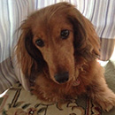

お客さまの声｜au損保

 お客さまの声
お客さまの声 
「加入して良かった」の声をたくさんいただいています！！
これからもお世話になります！（キナちゃんの飼い主 T・T様より）
突然の病気に慌てました・・・！（StitcHちゃんの飼い主 M・N様より）
- トリミングの際に、おしりがヘルニアではないか・・・と言われたStitcHちゃん。
そのまま動物病院に駆け込みました。
会陰ヘルニアとの診断で、自力で便を排泄するのが難しくなることもある病気とのこと。
手術し、１週間入院することになりました。
突然の出来事で、びっくりしましたが今ではすっかり元気です。ありがとうございました。
親身な対応に、心強さを感じました！（ひよちゃんの飼い主 H・S様より）
- 嘔吐を繰り返していた、ひよちゃん。
心配で病院に連れていくと、異物誤飲と診断され緊急手術となりました。
開腹手術の結果、飲み込んでしまった電化製品付属のパッキンが腸管を塞いでしまっている状態でした。
一時は亡くなるかもしれない程でしたが、手術も成功し、順調に回復に向かっています。
ひよちゃんのためなら高い手術や入院代も覚悟しておりましたが、au損保のペット保険に入っていたため大変助かりました。また、au損保の担当の方が、単なる事務手続きだけでなく、すごく心配してくださり、親身に対応していただいて、心強く思いました。本当に感謝しています、ありがとうございました。
元気いっぱいの、わが子のケガに備えて良かった！（小雪ちゃんの飼い主 H・O様より）
- 自宅のベランダから飛び降り、右前脚を骨折してしまった小雪ちゃん。
プレートを入れる整復手術を受け、11日間入院しました。
痛々しく、見ていてかわいそうで、最後の抜糸が終わった時は心からホッとしました。
普段から元気いっぱいで走り回っていたので、大きなケガに備えて、「ペットの保険」に入っていて良かったです。本当にありがとうございました。
なりやすい病気とは分かっていても、突然の発症には戸惑います！（来夢ちゃんの飼い主 K・U様より）

- 抱き上げたら「キャーン」と痛がり、すぐに降ろしても、元気がない様子だった来夢ちゃん。
翌朝には歩けなくなっていました。びっくりして、慌てて病院に連れて行くと、椎間板ヘルニアで、すぐに手術しなければ、下半身不随になるという診断でした。
緊急手術を受け、２週間入院し、何とか歩けるまで回復しました。ミニチュア・ダックスは、椎間板ヘルニアになりやすいと理解はしていましたが、突然の発症で戸惑いました。
万一のために、「ペットの保険」で備えていて、本当に良かった！感謝しています。
突然の発症、しかも治療費が高額でビックリ！！（あずきちゃんの飼い主 K・I様より）
- 散歩中、血便が出たあずきちゃん。
病院で血液検査と超音波検査を受けました。
結果、子宮の腫れと胆のう異常と判明し、すぐに、子宮・卵巣・胆のうの摘出手術が必要となりました。
無事に手術は成功、経過良好です。元気になって本当に良かったです。
かわいいわが子との生活を、これからも楽しみたいです。
いつ何が起こるか分からない！（アモちゃんの飼い主 M・N様より）

- 嘔吐が続いていたアモちゃん。
心配して病院に連れて行くと、エコーで腸に黒い影が見つかり緊急手術となりました。
開腹手術で見つかったのはマンゴーの種。私が寝ている間に食べてしまったようです。
手術は成功したものの、術後の体調が良くなく、再度病院へ。入院で点滴や注射などの治療を受け、すっかり元気になりました。食事も通常食に戻って、お散歩にも行けるようになりました！
いつ何が起こるか分からないので、「ペットの保険」に入っていて良かったです。ありがとうございました。
迅速・丁寧な対応に安心！（すちゃんの飼い主 M・I様より）

- １週間ほど下痢が続いていた、すちゃん。
食欲もなくなり、ぐったりとしていました。回復する様子がないので、かかりつけの病院へ連れていくと、胃腸炎による脱水症状を起こしていてそのまま入院しなければならなくなりました。
点滴や注射を受け、今ではすっかり元気です。
初めての入院で、実際にどれくらいの費用がかかるのかも不安でしたが、退院後に迅速に保険金を受け取ることができたので、本当に安心しました。親切丁寧にご対応いただき大変感謝しております。
ぜひ継続したいです。今後もお世話になります。ありがとうございました。
自己負担が軽くなり、助かった！（ネオちゃんの飼い主 T・Y様より）
- 突然、食欲がなくなったネオちゃん。
嘔吐が続き、ぐったりとした様子だったので病院へ連れていきました。レントゲン検査の結果、糸を飲み込んでいることが判りました。
このままだと命に関わることもあるとのことで、手術を勧められました。
手術には十数万円の費用が必要との説明で困惑しましたが、幸い加入していた、「ペットの保険」の補償対象だったので、自己負担額が軽く助かりました。
「ペットの保険」に入っていてよかった！これからも大切な家族として、楽しく過ごしていきたいです。
N15C310939[1602]
病理検査の結果がでるまで、心配でたまりませんでしたが結果は良性。
経過良好です。本当は保険を使わなくて良いのが一番ですが、これからもお世話になります。
ありがとうございました。